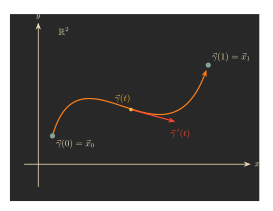

How do you do calculus on the surface of a sphere?
The goal of this blog post is to explain how the ideas of single variable calculus can be applied to more exotic shapes. This is the start of the field of differential geometry.
Along the way, we will also make sense of differential forms. This can help explain why certain manipulations are 'allowed' in single-variable calculus.
For example, suppose you are trying to solve the differential equation \[\frac{dy}{dx} = y.\]
In a standard calculus course, students are often taught to solve this by multiplying both sides by \(dx,\) turning the equation into \[dy = y dx.\] Dividing both sides by \(y\) and integrating, we find \[\int\frac{dy}{y} = \int dx,\] or \[\ln |y| = x + C.\] And indeed, \[y = Ce^x\] is the correct solution to this equation!
This is somewhat remarkable if you think about it, since in a calculus course \(dx\) is often taught as some notational device. If you tried to divide by \(+\) in \[1 + 1 = 2\] to get \[1\qquad 1 = \frac{2}{+},\] you'd get nonsense! And if you tried to cancel the \(d\)'s in \(dy/dx\) to get \(y/x,\) again it would be wrong. So, what does \(dx\) actually mean, and why can we manipulate it to solve ODEs?
The first concept of single variable calculus is the derivative. It tells you how to approximate your function; more precisely, the derivative \(f'(x)\) is defined as the number making the approximation \[f(x+\epsilon) \approx f(x) + f'(x)\epsilon\] as good as possible, for small \(\epsilon.\) So, if you change the input to your function by a tiny amount, and want to know how much the output changes, the derivative tells you.
The analogue of the derivative in multivariable calculus is called the gradient. The gradient is slightly more complicated than the derivative, because we have multiple inputs to nudge. For example, consider the function \[ F(x,y)=x^2-y^3.\] This function takes two inputs, an \(x\) and a \(y.\) If we nudge the \(x\)-input, then \[F(x + \epsilon, y) = (x+\epsilon)^2 - y^3 \approx F(x, y) + \underline{2x}\epsilon,\] but if we nudge the \(y\) input, then \[F(x, y+\epsilon) = x^2 - (y+\epsilon)^3 \approx F(x, y) \underline{- 3y^2}\epsilon.\] There are two different changes that can happen to the output of our function, depending on which input we nudged; the gradient packages this information into a single vector. The terms \(2x\) and \(-3y^2\) above are the partial derivatives of \(F\); in general, we have approximations \[F(x+\epsilon, y) \approx F(x, y)+\frac{\partial F}{\partial x}(x, y) \cdot \epsilon\] and \[F(x, y + \epsilon) \approx F(x, y) +\frac{\partial F}{\partial y}(x, y) \cdot \epsilon.\]
These two types of changes are packaged in a vector called the gradient: \[\operatorname{grad} F := \left(\frac{\partial F}{\partial x}, \frac{\partial F}{\partial y}\right).\]
The gradient is a particularly convenient packaging because of the following formula: if we view the input of \(F\) as a 2-dimensional vector, and \(\vec{v}\) is a short 2-dimensional vector, then \[F(\vec{x} + \vec{v}) - F(\vec{x}) \approx \operatorname{grad}(F)(\vec{x}) \cdot \vec{v},\] where the right hand side is the dot product. This can be found by expanding out the vectors into components.
Multivariable calculus doesn't just apply to the Euclidean plane, though -- it also applies to curved spaces. As an example, consider the sphere inside of 3-dimensional space; recall that the sphere is cut out by the equation \(x^2 + y^2 + z^2 = 1.\)
Imagine we have a function on the sphere. That is, we have a way of taking as input a point on the sphere, and outputting a number. For example, if the sphere is thought of as the surface of our planet Earth, then maybe the function is 'temperature at that point.' The widget below lets you play around with an example of such a temperature function; click on a point to see the temperature there, and drag to rotate the sphere.
How do we differentiate such a function? As with the gradient from before, the key thing to work out is in how many ways we can nudge our input.
Let's say that \((x,y,z)\) is a point on the sphere. For \(\epsilon_1, \epsilon_2, \epsilon_3\) three small numbers, when will \[(x+\epsilon_1, y+\epsilon_2, z+\epsilon_3)\] still lie on the sphere? Well, it's pretty easy to check when a point is on the sphere: square the coordinates and see if the squares add up to 1. Doing this, and using that \(\epsilon_1,\epsilon_2,\) and \(\epsilon_3\) are all very small, we find \[(x+\epsilon_1)^2 + (y+\epsilon_2)^2 + (z+\epsilon_3)^2 \approx (x^2+y^2+z^2) + 2x\epsilon_1 + 2y\epsilon_2 + 2z\epsilon_3.\]
As \((x,y,z)\) lies on the sphere already, we have \(x^2+y^2+z^2 = 1.\) So, for \[(x+\epsilon_1, y+\epsilon_2, z+\epsilon_3)\] to lie on the sphere, we need \[2x\epsilon_1 + 2y\epsilon_2 + 2z\epsilon_3 = 0.\]
So, if we start at \((x,y,z),\) then the small 'nudges' to the input we're allowed to make are exactly the solutions to the equation above. Observe how the nudges we're allowed to make depend on which point we're at!
You can see this in the widget below; click on a point to see which nudges are allowed there!
For example, at the point \((1/\sqrt{3}, 1/\sqrt{3}, 1/\sqrt{3})\) on the sphere, then a point like \[\left(\frac{1}{\sqrt{3}} + \epsilon, \frac{1}{\sqrt{3}} - 2\epsilon, \frac{1}{\sqrt{3}} + \epsilon\right)\] will still lie on the sphere (at least for \(\epsilon\) very small!), because \[2 \cdot \frac{1}{\sqrt{3}} \cdot \epsilon + 2 \cdot \frac{1}{\sqrt{3}} \cdot (-2\epsilon) + 2 \cdot \frac{1}{\sqrt{3}} \cdot \epsilon = 0.\]
But at the point \((1/\sqrt{2}, 1/\sqrt{2}, 0)\) on the sphere, that same nudge is no longer allowed: \[\left(\frac{1}{\sqrt{2}} + \epsilon, \frac{1}{\sqrt{2}} - 2\epsilon, 0 + \epsilon\right)\] does not lie on the sphere anymore, because now \[2 \cdot \frac{1}{\sqrt{2}} \cdot \epsilon + 2 \cdot \frac{1}{\sqrt{2}} \cdot (-2\epsilon) + 2 \cdot 0 \cdot \epsilon = -\sqrt{2} \cdot \epsilon,\] which isn't zero anymore.
This leads to the more complicated notion of the tangent space of a shape: when \(M\) is a shape like a sphere, and \(p\) is a point of \(M,\) the tangent space \(T_pM\) is the collection of all the small nudges you can make to \(p\) while still keeping it on \(M.\) For example, if \(M\) is the unit sphere as above, then we just saw that \(T_{(x,y,z)}M\) is the set of solutions to \[2x\epsilon_1 + 2y\epsilon_2 + 2z\epsilon_3 = 0.\]
Mathematicians tend to use the word manifold to refer to shapes (like the sphere, or the plane, or a torus) where the notions of calculus (tangent spaces, derivatives, etc.) make sense.
Let \(f\colon M \to \mathbb{R}\) be a function whose input is a point on the shape \(M,\) and whose output is a real number. Using tangent spaces, we can define the gradient of \(f\) as follows: at a point \(p\) of \(M,\) the gradient \(\operatorname{grad} f(p)\) is the unique vector in \(T_pM\) such that \[f(p + \vec{v}) \approx f(p)+\operatorname{grad} f(p) \cdot \vec{v}\] for all vectors \(\vec{v}\) in \(T_pM.\)
As an example, let's consider the function \[f(x,y,z) = z\] defined on the sphere from above--the latitude on earth. What is the gradient of \(f\) at the point \(p = (1/\sqrt{3}, 1/\sqrt{3}, 1/\sqrt{3})\)?
Well, the tangent space at \((0,0,1)\) is just the collection of all perturbations \((\epsilon_1,\epsilon_2,\epsilon_3)\) such that \[\epsilon_1 + \epsilon_2 + \epsilon_3 = 0.\] In other words, the vectors are of the form \((\epsilon_1, \epsilon_2, -\epsilon_1-\epsilon_2).\)
Observe that \[f\left(\frac{1}{\sqrt{3}} + \epsilon_1, \frac{1}{\sqrt{3}} + \epsilon_2, \frac{1}{\sqrt{3}} - \epsilon_1 - \epsilon_2\right) = \frac{1}{\sqrt{3}} - \epsilon_1 - \epsilon_2.\]
Thus, nudging our input changes our output by \(-\epsilon_1-\epsilon_2.\) To find the \(\operatorname{grad} f(p)\) in this example, we therefore need some vector \((a, b, -a-b)\in T_pM\) such that \[(a,b,-a-b) \cdot (\epsilon_1, \epsilon_2, -\epsilon_1-\epsilon_2) = -\epsilon_1 - \epsilon_2.\]
The dot product expands out to \[2a\epsilon_1 + 2b\epsilon_2,\] so we find \(a=b=-1/2\). So \[\big(-\frac12, -\frac12, 1\big)\in T_pM\] is our gradient!
Notice how different this is from the gradient of the function \(g \colon \mathbb{R}^3 \to \mathbb{R}\) given by the same formula \[g(x,y,z) = z.\] There, the gradient is just \((0, 0, 1).\) The reason that the two gradients are different is beacuse, when we constrain our input to the unit sphere, the gradient needs to be a tangent vector; this vector \((0,0,1)\) is not tangent to the sphere at \((1/\sqrt{3}, 1/\sqrt{3}, 1/\sqrt{3}),\) so it cannot be the gradient!
The most important part about the gradient is not what the vector \(\operatorname{grad} f(p)\) itself is, but instead what it does: the dot product \(\operatorname{grad} f(p) \cdot \vec{v}\) turns the vector \(\vec{v}\) into the number \(f(p+\vec{v}) - f(p).\) It can sometimes be helpful to focus on how \(\operatorname{grad} f(p)\) turns vectors into numbers, instead of thinking of \(\operatorname{grad} f(p)\) as a vector itself.
A covector (or, a linear functional) is some linear operation which turns vectors into numbers; if we write our covector as \(L,\) then saying \(L\) is linear just means \[L(\vec{v} + \vec{w}) = L(\vec{v}) + L(\vec{w})\] and \[L(\lambda \cdot \vec{v}) = \lambda \cdot \vec{v}\] for any scalar \(\lambda.\)
As examples of covectors, one simple covector on space \(\mathbb{R}^3\) is the covector \(dx,\) which is defined by \[dx(v_1, v_2, v_3) = v_1.\] In other words, \(dx\) sends a vector \(\vec{v}\) to its \(x\)-component. Similarly, there are covectors \(dy\) and \(dz\) given by \[dy(v_1, v_2, v_3) = v_2,\] \[dz(v_1, v_2, v_3) = v_3.\]
We can then define the derivative of a function \(f\colon M \to \mathbb{R}\) at a point \(p\) as the covector \(df(p)\) which obeys \[f(x+\vec{v}) - f(x) \approx df(p)(\vec{v}).\] Remember: \(df(p)\) is a covector in \(T_pM,\) meaning it takes tangent vectors in \(T_pM\) and turns them into numbers. So, the notation \(df(p)(\vec{v})\) means to apply this covector to the tangent vector \(\vec{v}.\)
In our example from the last section, where \(M\) was the sphere and \(f(x,y,z) = z,\) the covector approach makes things a little easier than defining the derivative as a gradient. Indeed, let's try to compute the derivative of \(f\) at \(p = (1/\sqrt{3}, 1/\sqrt{3}, 1/\sqrt{3})\) again. As we saw above, \(T_pM\) was the space of triples \((\epsilon_1,\epsilon_2,\epsilon_3)\) where \[\epsilon_1+\epsilon_2+\epsilon_3=0.\]
Then \[f(p + (\epsilon_1,\epsilon_2,\epsilon_3)) - f(p) = \epsilon_3,\] so, as a covector, the derivative is simple: \[df(p)(\epsilon_1,\epsilon_2,\epsilon_3) = \epsilon_3.\]
Notice that this \(df(p)\) is the same as the covector \(dz\) from above; in other words, \(df(p) = dz.\)
We can also write this covector a different way: because \(\epsilon_1+\epsilon_2+\epsilon_3 = 0,\) inside of \(T_pM,\) we have \[dx + dy + dz = 0,\] because the three coordinates of any vector in \(T_pM\) sum to zero. Thus \[dz = -dx-dy,\] so we could have also written \[df(p) = -dx-dy.\]
The gradient and covector approach to derivatives are equivalent, but the covector view is in some sense more natural. That's because the fundamental aspect of derivatives is what it does to other vectors, which is what a covector is.
The derivative is defined to help us calculate how the output of our function changes when we make a small change in the input. But what do we do when we need to figure out how the output of our function changes after we make a big change in put?
Here, the fundamental theorem of calculus says that \[f(x_1) - f(x_0) = \int_{x_0}^{x_1} f'(t) \, dt.\]
The idea behind this theorem is to break down the large change in input (from \(x_0\) to \(x_1\)) into an enormous number of small changes. For example, even if \(x_1-x_0\) is very large, the quantity \[\epsilon = \frac{x_1 - x_0}{10^9}\] is probably pretty small. To go from \(x_0\) to \(x_1\), you could take one big step of size \(x_1 - x_0,\) or you could take one billion steps of size \(\epsilon.\)
But \(\epsilon\) is so small that our derivative approximation works very well for jumps of size \(\epsilon.\) Breaking our journey into a billion small steps, we find \[f(x_1) - f(x_0) = \left(f(x_0 + \epsilon) - f(x_0)\right) + \left(f(x_0 + 2\epsilon) - f(x_0 +\epsilon)\right) + \cdots + \left(f(x_0 + 10^9\epsilon) - f(x_0 + (10^9-1)\epsilon)\right).\]
Using the derivative, we can approximate each term of the right hand side: \[f(x_0 + \epsilon) - f(x_0) \approx f'(x_0) \cdot \epsilon\] \[f(x_0 + 2\epsilon) - f(x_0+\epsilon) \approx f'(x_0+\epsilon) \cdot \epsilon,\] \[f(x_0 + 3\epsilon) - f(x_0+2\epsilon) \approx f'(x_0+2\epsilon) \cdot \epsilon.\] and so on, so that \[f(x_1) - f(x_0) \approx f'(x_0)\epsilon + f'(x_0+\epsilon)\epsilon + \cdots + f'(x_0+(10^9-1)\epsilon)\epsilon.\]
An astute reader might notice a problem, though: we added up one billion approximations together -- surely this increases our error dramatically! Fortunately, the final error is not so bad; the error in the derivative approximations is on the order of \(\epsilon^2.\) So, one billion derivative approximations summed together have an error on the order of \(10^9\epsilon^2 = (x_2-x_1)^2/10^9.\) One billion is pretty big, so this quotient is still pretty small!
As we make the denominator \(10^9\) in \[\epsilon = \frac{x_1-x_0}{10^9}\] go to infinity, the resulting sum converges to \[\int_{x_0}^{x_1} f'(t) \, dt,\] and in the limit we get \[\int_{x_0}^{x_1} f'(t) \, dt = f(x_1) - f(x_0).\]
Is there a version of the fundamental theorem of calculus for two variable functions?
For example, let's go back to our function \[F(x, y) = x^2 - y^3.\] This function has two inputs, and one output. For two points \(\vec x_0,\vec x_1\in\mathbb R^2\), can we rewrite \[F(\vec{x}_1) - F(\vec{x}_0)\] as an integral?
To start, we need to break the jump from \(\vec{x}_0\) to \(\vec{x}_1\) down into smaller pieces. This is slightly more complicated in 2-dimensions, because there are many possible paths from \(\vec{x}_0\) to \(\vec{x}_1.\) Let's just say \[\vec{\gamma}\colon [0, 1] \to \mathbb{R}^2\] is a path from \(\vec{x}_0\) to \(\vec{x}_1\); this means, for every time \(t\) between 0 and 1, \(\vec{\gamma}(t)\) is some vector, such that \(\vec{\gamma}(0)\) is \(\vec{x}_0\) and \(\vec{\gamma}(1)\) is \(\vec{x}_1.\)

A small step by \(dt\) now looks like going from \(\vec{\gamma}(t)\) to \(\vec{\gamma}(t+dt).\) We can use the derivative of \(\vec{\gamma}\) to approximate \[\vec{\gamma}(t+dt) \approx \vec{\gamma}(t)+\vec{\gamma}'(t)dt,\] where \(\vec{\gamma}'(t)\) is the vector which is found by differentiating the components of \(\vec{\gamma}\); for example, if \[\vec{\gamma}(t) = (1+t, t^3 - t),\] then \[\vec{\gamma}'(t) = (1, 3t^2 - 1).\]
Using this approximation, we find \[F(\vec{\gamma}(t+dt)) - F(\vec{\gamma}(t)) \approx \operatorname{grad} F(\vec{\gamma}(t)) \cdot \vec{\gamma}'(t) \, dt.\]
Adding all of these changes up, we find \[F(\vec{x}_1) - F(\vec{x}_0) = \int_0^1 \operatorname{grad} F(\vec{\gamma}(t)) \cdot \vec{\gamma}'(t) \, dt.\]
This is a wonderful formula, and it is the analogue of the fundamental theorem of calculus for 2-variable functions.
The kind of integral appearing in our multivariable fundamental theorem of calculus has a special name: a line integral.
Generally, let \[\vec{V} \colon \mathbb{R}^2 \to \mathbb{R}^2\] be a vector field. This means \(V\) assigns a vector to every point of the plane; an example of a vector field is illustrated in the widget below. A vector field attaches a vector to every point of the plane; but drawing a vector at every point would lead to an unreadable diagram, so the picture only draws certain vectors; feel free to click a point to see what the vector field does there.
There is one more thing we mention: vectors have length and direction. Unfortunately, some of the vectors in a vector field are so short that they're hard to see, and some are so long that they would obstruct your view of other vectors in the vector field. For this reason, in our drawing of a vector field, we draw all vectors as being roughly the same length, and instead use color to indicate length.
Then \[\int_{\gamma} \vec{V} \, d\vec{r} = \int_0^1 \vec{V}(\gamma(t)) \cdot \gamma'(t) \, dt.\] This is the exact same type of formula that appeared in the fundamental theorem of calculus, but now with a general vector field \(\vec{V}.\)
Why are line integrals so common? One application of them is the concept of work in physics; force is a vector field and work is its line integral. Even when your line integral doesn't come from physics, pretending it is calculating work can often be helpful for gaining intuition. This is a common trend in mathematics: if the same formula shows up in two contexts, it can often be helpful to use your intuition from the first context to understand the formula's appearance in the second context, even if the two contexts are completely different.
In physics, work is the amount of energy needed to move when a force is opposing you. For example, imagine a ball is rolling over a rough surface, experiencing a constant force of friction of \(\mu\) Newtons (where \(\mu\) is some number). Intuitively, the ball is losing some energy due to this friction; physicists quantify this with work.
The longer the ball moves, the more energy it should lose. Thus work depends on \(\mu\) (the friction force) and on \(d,\) the length the ball moves. In fact, physicists define work as \[W = d \cdot \mu.\] One way to see this is reasonable is to do dimensional-analysis; this quantity has the correct units to be energy, and work should measure something like total energy expenditure.
Sometimes, though, work is a little more complicated. Imagine a bunny is hopping around. Whenever the bunny leaves the ground, they experience some force \(F\) due to gravity, pulling them straight down. If they wanted to hop straight up with distance \(d,\) then the work needed to counteract gravity's pull would be \(d \cdot F,\) exactly as the formula above.
However, bunnies rarely jump straight up -- they usually hop in parabolic arcs, where they move forwards and upwards at the same time. This complicates our calculation, because now we can't just multiply distance of motion times \(F\): gravity only makes it harder for you to move up, and it doesn't care at all about your lateral motion. So, we have to tweak the formula somewhat, to only account for horizontal displacement. The work done by the bunny to oppose gravity is just \(h \cdot F,\) where \(h\) is the height of the jump at its highest point.
To better understand this, remember that force and displacement are both vectors. So, instead of naively multiplying the magnitude of force and displacement together, we should take the the dot product of force and displacement; this is like taking the product of the lengths of those vectors, but accounts for the fact that the vectors might not be lined up exactly. The true work formula is the dot product of displacement and force: \[W = \vec{r} \cdot \vec{F},\] where \(\vec{r}\) is displacement and \(\vec{F}\) is force.
But wait: in our bunny example, the total displacement of a hop is a vector with no vertical component (because the bunny hops and then lands back on the ground). So, the force of gravity is purely vertical, the net displacement is purely horizontal, and thus the dot product is zero. This isn't what we expect: the work the bunny does should be related to the total height!
The trouble with the formula \(W = \vec{r} \cdot \vec{F}\) is that it only works on objects moving in a straight line and experiencing a constant force.
However, most of the time objects are not experiencing a constant force, and are not moving in a straight line. For example, imagine gravity: gravity pulls you towards the center of the Earth, and depending on where you're standing, the direction of this pull is different. We can represent this with a vector field \[\vec{F} \colon \mathbb{R}^2 \to \mathbb{R}^2,\] assigning to every point a vector representing the force which a 1 kilogram object would feel (here we're using a 2-dimensional model of the world to make our drawings simpler, but you could do the math in the same way with a 3-dimensional world).
Fortunately, we can break any path into a series of approximately straight line paths, on which the force is approximately constant; see the widget below. Then, adding up the work over each of those small segments (using our \(\vec{r} \cdot \vec{F}\) work formula), we can get an approximation to the total work over the path.Then, adding up the work over each of those small segments (using our \(\vec{r} \cdot \vec{F}\) work formula), we can get an approximation to the total work over the path.
If you step through the widget, you'll see that the sum we do to calculate total work over this curve is very similar to what we did for line integrals in the fundamental theorem of calculus: we break our path up into small, approximately straight line pieces, and approximate the force vector field has constant over each piece. Thus the real work formula is \[W = \int_{\gamma} \vec{F} \cdot d\vec{r},\] where \(\gamma\) is the path the object moves along.
In particular, line integrals show up in physics all the time!
Let \(M\) be a manifold -- for example, the sphere from earlier. What should a line integral on \(M\) mean?
To start, we take a path \[\gamma \colon [0, 1] \to M\] on \(M.\)
Just as our paths above had tangent vectors, at every time \(t,\) we can find some tangent vector \(\gamma'(t) \in T_{\gamma(t)}M\) of our path in \(M.\)
In the classical line integrals from earlier, we also started with a vector field \(\vec{F}\) to integrate. But remember: the only thing we did with this vector field was form the dot product \(\vec{F}(\gamma(t)) \cdot \gamma'(t).\) Thus, to form line integrals, it doesn't matter what the vector \(\vec{F}(\gamma(t))\) is -- it only matters that you know how to compute the dot product against it. As with the gradient, this suggests that it is more natural to replace vector fields with covector fields. These covector fields are usually called differential 1-forms.
A vector field on \(\mathbb{R}^2\), recall, assigns a vector to every point of the plane. Similarly, on a manifold \(M,\) a differential 1-form is a way of assigning a covector to every point of \(M.\) Given a differential 1-form \(\omega\), and a point \(p\) on the manifold \(M,\) we can extract a covector \(\omega(p).\) This means \(\omega(p)\) is some linear operator which turns tangent vectors in \(T_pM\) into numbers.
So, assume we have a path \(\gamma \colon [0, 1] \to M,\) and a differential 1-form \(\omega.\) Then we can define the line integral of \(\omega\) over \(\gamma\) as \[\int_{\gamma} \omega = \int_0^1 \omega(\gamma(t))(\gamma'(t)) \, dt.\] Remember: \(\gamma(t)\) is some point of \(M,\) and \(\gamma'(t)\) is a tangent vector at that point; \(\omega(\gamma(t))\) is a covector, and so it can be used to turn the vector \(\gamma'(t)\) into the number \(\omega(\gamma(t))(\gamma'(t)).\) Thus the integral on the right hand side is the integration of an ordinary number-valued function.
As an example, for the vector field \(\vec{F}(x, y) = (-y, x)\), the line integral \[\int_{\gamma} \vec{F} \cdot d\vec{r}\] we defined above can be rewritten in terms of differential forms as \[\int_{\gamma} -y dx + x dy.\] This is because \[(-y, x) \cdot (v_1, v_2) = -yv_1 + xv_2,\] so taking the dot product of \(\vec{F}\) with a vector \(\vec{v}\) is the same as applying the covector \(-y dx + xdy\) to \(\vec{v}.\)
The fundamental theorem of calculus on a general manifold \(M\) now reads \[f(q) - f(p) = \int_{\gamma} df,\] where \(\gamma\) is any path from \(p\) to \(q,\) and \(df\) is the covector derivative we defined earlier.
As a concrete example, let's let \(M\) be the sphere again, and set \(f(x,y,z)=z\), the latitude.
Let \(q = (0,0,1)\) be the north pole, and \(p = (0, 0, -1)\) be the south pole of our sphere. We can define a path \[\gamma\colon [0, 1] \to M\] from the south pole to the north pole by the formula \[\gamma(t) = (0, \sin(\pi t), -\cos(\pi t)).\] This path is drawn in the widget below; you can use your mouse to change the viewing angle.
Observe that \[\gamma'(t) = (0, \pi\cos(\pi t), \pi\sin(\pi t)).\] As a sanity check, this vector does indeed lie in \(T_{\gamma(t)}M,\) because it obeys the equation \[2 \cdot 0 \cdot 0 + 2 \cdot \sin(\pi t) \cdot \pi\cos(\pi t) + 2 \cdot (-\cos(\pi t)) \cdot \pi\sin(\pi t) = 2\pi \cos(\pi t)\sin(\pi t) - 2\pi\cos(\pi t)\sin(\pi t) = 0.\]
To get a geometric sense of what tangency means, it might be helpful to view the following animation of the path on the sphere, but this time with the tangent vector drawn in.
As we saw earlier, \(df = dz.\) Thus \[\int_{\gamma} df = \int_{\gamma} dz = \int_0^1 dz(\gamma'(t)) \, dt = \int_0^1 \pi\sin(\pi t) = 2.\]
And indeed, \[f(q) - f(p) = 1 - (-1) = 2\] as well, just like the fundamental theorem of calculus predicts!
In the last section, we saw differential 1-forms: these turn tangent vectors into numbers, and we can use them to make line integrals.
But, in classical multivariable calculus, there is another type of integral we can do: surface integrals.
As an example of a surface integral, imagine you're building a drain in 3-dimensional space. This drain can be idealized as a 2-dimensional hole which water flows through. You want to know: how much water flows through your drain every second?
Let's start with a simple example: imagine the water was flowing at a constant velocity \(\vec{v}\) everywhere; in fact, let's say it's even flowing straight down. Imagine also that our drain is a little rectangle. The flow rate depends on the angle our rectangular drain is at compared to the flow; if you have trouble visualizing this, play with the widget below -- it helps to start with the extreme values of \(0^{\circ}\) (where the flow is maximized) and \(90^{\circ}\) (where there is no drainage at all!).
In work, we used the dot product of vectors, which multiplied the lengths of the vectors, but with a correction factor for how aligned the vectors were. Similarly, to calculate the total drainage here, we take the dot product \[\vec{v} \cdot \vec{n},\] where \(\vec{v}\) is the water velocity, and \(\vec{n}\) is a vector whose direction is normal to our drain, and whose length is the area of our drain.
If the sides of our drain are given by vectors \(\vec{r}_1\) and \(\vec{r}_2,\) then the normal vector whose length is the area is just the cross product \[\vec{r}_1 \times \vec{r}_2.\] Thus the total flow through our drain is \[\vec{v} \cdot (\vec{r}_1 \times \vec{r}_2).\]
Unfortunately, in the real world, water flows in a much more complicated way -- the velocity is just given by some vector field, instead of being constant, and our drain can have any shape at all, not necessarily a rectangle.
Imagine we have a parametrization \[\sigma \colon [0, 1] \times [0, 1] \to \mathbb{R}^3\] of our drain; now we need two parameters -- as opposed to the one parameter we needed to define a path -- because the drain is 2-dimensional.
Near the point \(\sigma(s,t),\) the vector field \(\vec{V}(x,y,z)\) controlling flow is approximately constant. So, let's look at the tiny patch of our drain with corners \(\sigma(s,t), \sigma(s + \epsilon_1, t), \sigma(s, t+\epsilon_2),\) and \(\sigma(s+\epsilon_1,t+\epsilon_2).\) For \(\epsilon\) very small, this patch is approximately a parallelogram. This will be illustrated in the widget below, but first we give a few formulas.
The area of this rectangle is the product of the lengths of its two sides. To find the two side lengths, observe that \[\sigma(s+\epsilon, t) - \sigma(s, t) \approx \frac{\partial\sigma}{\partial s}(s, t) \cdot \epsilon_1\] and \[\sigma(s, t+\epsilon) - \sigma(s, t) \approx \frac{\partial\sigma}{\partial t}(s, t) \cdot \epsilon_2.\]
Using our constant flow calculation from above, we find that, in this tiny parallelogram, we get a total flow of \[\vec{V}(\sigma(s,t)) \cdot \left|\frac{\partial\sigma}{\partial s}(s,t)\times\frac{\partial\sigma}{\partial t}(s,t)\right| \cdot \epsilon_1\epsilon_2.\]
Adding up all of these tiny patches, our total flow is the integral \[\int_0^1\int_0^1 \vec{V}(\sigma(s,t)) \cdot \left(\frac{\partial\sigma}{\partial s}(s,t)\times\frac{\partial\sigma}{\partial t}(s,t)\right) \, ds dt.\]
In \(\mathbb{R}^3,\) surface integrals mesaure the flow of some fluid through a surface. The key step to making them was having some way to measure the flow going through very thin rectangles.
To make this work on an arbitrary manifold \(M,\) we introduce differential 2-forms. A differential 2-form \(\omega\) is some gadget which takes in two tangent vectors -- thought of as the two vectors spanning some very tiny parallelogram -- and outputs the amount of flow through that rectangle.
Like differential 1-forms, \(\omega\) should be linear in both arguments; this means \[\omega(\vec{v}_1 + \vec{w}_1, \vec{v}_2) = \omega(\vec{v}_1, \vec{v}_2) + \omega(\vec{w}_1, \vec{v}_2),\] \[\omega(\vec{v}_1, \vec{v}_2+ \vec{w}_2) = \omega(\vec{v}_1, \vec{v}_2) + \omega(\vec{v}_1, \vec{w}_2),\] and \[\omega(\lambda \vec{v}_1, \vec{v}_2) = \omega(\vec{v}_1, \lambda \vec{v}_2) = \lambda\omega(\vec{v}_1, \vec{v}_2).\]
However, differential 2-forms obey one more requirement, related to our discussion of signs and orientations when doing flows above. We require \[\omega(\vec{v}, \vec{w}) = -\omega(\vec{w}, \vec{v}).\] That is, if you swap the order of the two vectors, then the total flow going through the parallelogram they span should reverse.
Given a differential 2-form \(\omega\) on a manifold \(M,\) and a surface \[\sigma \colon [0, 1] \times [0, 1] \to M\] embedded in \(M,\) we can define \[\int_{\sigma} \omega = \int_0^1\int_0^1 \omega(\sigma(s,t))\left(\frac{\partial\sigma}{\partial s}(s,t), \frac{\partial\sigma}{\partial t}(s, t)\right) \, ds dt.\]
Our first 'concrete' example of a differential 1-form was the derivative of a function. Can we produce differential 2-forms by differentiating 1-forms?
Let \(\omega\) be a differential 1-form. Suppose that \(p\) is a point on our manifold \(M,\) and \(\vec{v} \in T_pM\) is some tangent vector. Then we may want to ask for an approximation to \[\omega(p + \vec{v})(\vec{w}) - \omega(p)(\vec{w}),\] in the same way that, for an ordinary function \(f,\) we have \[f(p + \vec{v}) - f(p) \approx \omega(p)(\vec{v}).\]
Unfortunately, there is one problem with trying to turn \[\omega(p + \vec{v})(\vec{w}) - \omega(p)(\vec{w})\] into a 2-form: 2-forms need to obey that funny condition where, if you swap the two input vectors, the output negates. Swapping \(\vec{v}\) and \(\vec{w}\) in the above gives \[\omega(p+\vec{w})(\vec{v}) - \omega(p)(\vec{v}),\] which has no obvious relation to the original expression. However, the difference of these two quantities will obey the "swapping inputs negates output", and so we define the derivative of a 1-form as the 2-form obeying \[d\omega(\vec{v}, \vec{w}) \approx \left(\omega(p + \vec{v})(\vec{w}) - \omega(p)(\vec{w})\right) - \left(\omega(p+\vec{w})(\vec{v}) - \omega(p)(\vec{v})\right).\]
The fundamental theorem of calculus told us that \[f(q) - f(p) = \int_{\gamma} df,\] where \(\gamma\) is any path from \(p\) to \(q.\) Is there a similar identity for 1-forms?
Take \[\sigma \colon [0, 1] \times [0, 1] \to M\] some surface. The analogue of \(\int_{\gamma} df\) is then the surface integral \[\int_{\sigma} d\omega.\]
What does that surface integral mean? Well, we are supposed to break the region \(\sigma\) up into tiny regions, and then sum the net flow through each region. Over a tiny region of \(\sigma,\) say with vertices \[p = \sigma(s, t), \sigma(s + \epsilon_1, t), \sigma(s, t+\epsilon_2), \sigma(s+\epsilon_1,t+\epsilon_2),\] the flow is \[d\omega\left(\frac{\partial\sigma}{\partial s}\epsilon_1, \frac{\partial\sigma}{\partial t}\epsilon_1\right) \approx \omega\left(p + \frac{\partial\sigma}{\partial s}\epsilon_1\right)\left(\frac{\partial\sigma}{\partial t}\epsilon_2\right) - \omega(p)\left(\frac{\partial\sigma}{\partial t}\epsilon_2\right) - \omega\left(p+\frac{\partial\sigma}{\partial t}\epsilon_2\right)\left(\frac{\partial\sigma}{\partial s}\epsilon_1\right) + \omega(p)\left(\frac{\partial\sigma}{\partial s}\epsilon_1\right).\]
This expression is a bit of a mess! There are four terms, some of which we add and some we subtract. To get a better idea of what's going on, it is helpful to set \(\vec{v} = \frac{\partial\sigma}{\partial s}(p)\epsilon_1\) and \(\vec{w} = \frac{\partial\sigma}{\partial t}(p)\epsilon_2.\) Then our four terms come from the diagram below.
An incredible cancellation occurs when we put a few of these small regions next to each other.
Thus, when we evaluate the entire surface integral, we get an enormous amount of cancellation. The only terms which survive come from the boundary of our surface \(\sigma.\)
As is seen on slide 11 in the widget above, the only terms surviving on the bottom side of our region are the terms \[\omega(p)(\vec{v}_1) + \omega(p+\vec{v}_1)(\vec{v}_1 + \vec{v}_2) + \cdots,\] where the extra terms would appear if we continued our tiling instead of just looking at this small \(2\times 2\) chunk.
As we cover our region with smaller and smaller squares, the above difference converges to \[\int_a \omega,\] where \(a\) is just the bottom side of \(\sigma.\) Similarly studying the other three sides of \(\sigma,\) we find \[\int_{\sigma}d\omega = \int_a \omega + \int_b\omega - \int_c \omega - \int_d\omega,\] where \(a,b,c,d\) are as in the below figure.
Sometimes people abbreviate this to \[\int_{\sigma} d\omega = \int_{\partial\sigma} \omega,\] where \(\partial\sigma\) means "boundary of \(\sigma\)" -- that is, the four sides \(a,b,c,d,\) but with \(a\) and \(b\) are positively oriented, and \(c, d\) are negatively oriented.
In general, a differential \(k\)-form on a manifold \(M\) is some gadget which takes in \(k\) different tangent vectors and spits out a number, obeying some axioms (saying that it should be linear in each argument, and 'alternating' -- meaning if you swap any two consecutive arguments, the outputted number is negated).
Given a \(k\)-dimensional piece \[\sigma \colon [0, 1]^k \to M\] of your manifold, and a differential \(k\)-form \(\omega,\) you can define an integral \[\int_{\sigma} \omega,\] analogously to the line and surface integrals defined above.
And, similarly to before, given a differential \(k\)-form \(\omega,\) we can define a differential \((k+1)\)-form \(d\omega,\) called the differential of \(\omega,\) and which obeys \[\omega(p+ \vec{v})(\vec{w}_1, ..., \vec{w}_k) - \omega(p)(\vec{w}_1, ..., \vec{w}_k) \approx d\omega(p)(\vec{v}, \vec{w}_1, ..., \vec{w}_k).\]
Stokes' theorem, a profound generalization of the fundamental theorem of calculus, tells us that, for any differential \(k\)-form \(\omega,\) and any \((k+1)\)-dimensional piece \[\sigma \colon [0, 1]^{k+1} \to M\] of your manifold, we have \[\int_{\sigma} d\omega = \int_{\partial\sigma} \omega,\] where (as in our surface integral case) we write \(\partial\sigma\) to mean the boundary of \(\sigma.\)
These ideas are the beginnings of the field of differential geometry. In differential geometry, one tries to do calculus on exotic shapes; this is incredibly useful for physics, as it turns out that most of the laws of physics are phrased in terms of calculus, but the shapes in our universe (the surface of the Earth, or even the structure of spacetime itself!) are not perfectly flat Euclidean planes, so that usual multivariable calculus doesn't directly apply. Differential geometry of incredibly high-dimensional shapes is also useful in abstract mathematics, because sometimes these shapes can represent rather concrete objects! We hope you're now more prepared to do calculus anywhere you need to -- and we hope that seeing how calculus is generalized to exotic shapes gives you a better appreciation of what makes calculus work in the usual settings!